Actions on Googleは、スマートスピーカー、携帯電話、車、テレビ、ヘッドフォンなど、5億以上のデバイスにわたって、Googleの仮想パーソナルアシスタントであるGoogleアシスタントの機能を拡張するためのソフトウェアを作成できる、開発者向けプラットフォームです。ユーザーは、食料品の購入や乗車予約など、会話の中で物事を成し遂げるためにGoogleアシスタントを活用することができます（現在の機能の完全なリストについては、Actions Directoryをご覧ください）。開発者として、あなたはActions on Googleを使用して、ユーザーと自身のサードパーティサービスとの間の楽しく効果的な会話体験を簡単に作成し活用することができます。
このコードラボモジュールは、マルチモジュールチュートリアルの一部です。各モジュールは、単独で学習することができますし、または他のモジュールと共に順々に学習することもできます。それぞれのモジュールでは、与えられたソフトウェア要件からアクションを構築する方法に関する、エンドツーエンドの指示を提供します。また、ユーザーに高品質の会話体験を提供するアクションを実装するために必要な概念とベストプラクティスについても説明します。
このコードラボは、Actions on Googleを使用して開発するための中間レベルの概念をカバーしています。このコードラボを開始する前に、Build Actions for the Google Assistant (Level 1) で説明されているトピックに慣れておくことを強くおすすめします。
何をつくりますか？
このコードラボでは、複数の機能を使って、洗練された会話型アクションを構築します。
- ディープリンクをサポートして、直接特定のダイアログポイントにてユーザとの会話を開始します。
- Actions on Googleプラットフォームによって提供されるユーティリティを使用して、そのユーザ個人の名前や住所を取得します。
- 会話を進めるためにフォローアップの質問を使って応答します。
- サウンドエフェクトを備えたリッチなビジュアルレスポンスをユーザーに提供します。
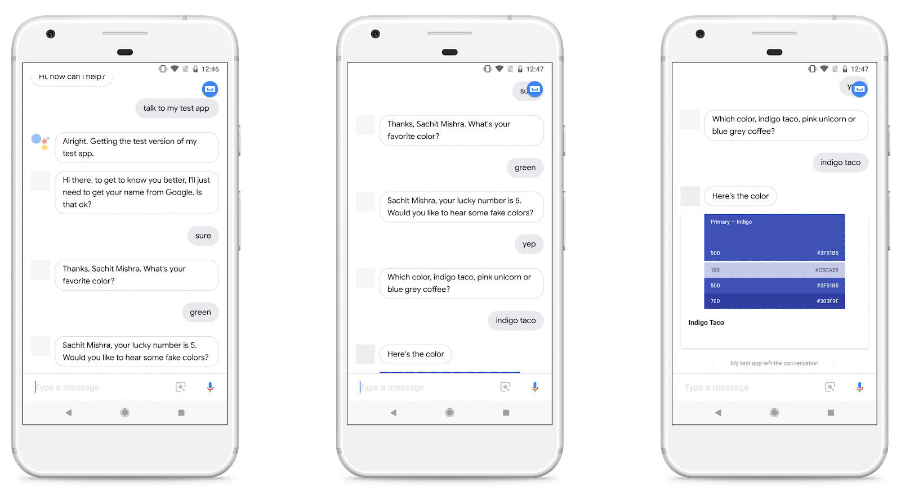
What you'll learn
- Node.jsクライアントライブラリを使ったローカルでのあなたのフルフィルメントの開発方法。
- Firebaseコマンドラインを使ったアクションのデプロイ方法。
- ディープリンクの作成方法。
- ヘルパーインテントの使用方法。
- Dialogflowカスタムエンティティの追加方法。
- SSMLを使ったサウンドエフェクトの作成方法。
- コンテキストを伴うDialogflowフォローアップインテントの追加方法。
- リッチレスポンスの作成方法（basic cards）。
- セッションデータの保存方法。
必要なもの
以下のツールがあなたの環境に必要となります。
- WebStorm、Atom、Sublime のような、あなたが選択したIDE/テキストエディタ。
- インストールされているNodeJS、npm、gitを使ってシェルコマンドを実行するためのターミナル。
- Chrome のようなウェブブラウザ。
- GitHub.com アカウント（無料で作成することができます）。
JavaScript (ES6) に慣れておくことを強く推奨しますが、このコードラボで使われているWebhookコードを理解するためには、必須ではありません。
任意: サンプルコード
任意ですが、私たちのGitHubリポジトリから、このコードラボの全てのプロジェクトコードを得ることができます。
Firebase Command Line Interface (CLI) は、Cloud Functions にあなたの Actions project をデプロイ可能にします。
CLIをインストールまたはアップグレードするために、以下の npm コマンドを実行してください:
npm -g install firebase-toolsCLI が正しくインストールされたかどうかを検証するために、ターミナルを開いて、以下を実行してください:
firebase --versionCloud Functions の最新の機能全てが必要となるので、Firebase CLI のバージョンが 3.5.0 以上かどうかを確認してください。もしそうでなければ、3.5.0 以上にアップグレードするために、 npm install -g firebase-tools を実行してください。
次のコマンドを実行して、Firebase CLI を認可します:
firebase loginBuild Actions for the Google Assistant (Level 1) にて、あなたの最初の Actions project を迅速に開始するために、私たちは Dialogflow インラインエディタを使いました。
このコードラボでは、Level 1 コードラボからの Dialogflow インテントを使って開始しようと思いますが、Cloud Funcitions for Firebase を使って、あなたのマシンのローカル上で Webhook を開発し、デプロイします。
なぜあなたのアクションをローカルで開発するのか？
Dialogflow インラインエディタを使用するのとは対照的に、ローカルマシンを使用すると、プログラミング環境とデプロイメント環境をより詳細に制御できます。これにはいくつかの利点があります:
- ローカルで開発された Webhook は、Actions on Googleの機能に関するより大きなソフトウェアパッケージをサポートしています。
- あなたは、一つの Webhook 実装ファイル（
index.js） のみに制限されません。 - また、ローカル環境で開発することで、バージョン管理のようなソフトウェアエンジニアリングのベストプラクティスに従うことができます。
ベースファイルのダウンロード
このコードラボのベースとなるファイルを得るために、Level 1 コードラボのための GitHub リポジトリを clone するために、以下のコマンドを実行してください。
git clone https://github.com/actions-on-google/codelabs-nodejsこのリポジトリは、以下の重要なファイルを含んでいます:
level1-complete/functions/index.js. あなたのフルフィルメントコードを含む JavaScript ファイルです。これは、追加のアクションや機能を追加していくことになる中心的なファイルです。level1-complete/functions/package.json. このファイルは、この Node.js プロジェクトの依存関係やその他のメタデータのアウトラインを示します。このコードラボでは、このファイルは無視できます。Actions on Google クライアントライブラリの異なるバージョンや、他のNode.jsモジュールを使いたい場合にのみ、このファイルを編集する必要があります。level1-complete/codelab-level-one.zip. これは、Level 1 コードラボのための Dialogflow エージェントファイルです。もし既に Level 1 コードラボを完了している場合は、このファイルを無視しても大丈夫です。
わかりやすくするために、 /level1-complete のディレクトリ名を /level2 に変更することを強くお勧めします。ターミナルで mv コマンドを使用して変更することができます。例えば、以下です:
$ cd codelabs-nodejs
$ mv ./level1-complete ./level2プロジェクトとエージェントのセットアップ
次に、あなたは Actions project と、コードラボのための Dialogflow エージェントをセットアップすることが必要です。
もし既に Build Actions for the Google Assistant (Level 1) コードラボを完了している場合は、以下を行います:
- Dialogflow Console に直接行きます。
- Fulfillment に遷移します。
- Inline Editor を無効にします。
もしゼロから始める場合は、以下を行います。
- Actions Console を開きます。
- Add/import project をクリックします。
- "actions-codelab-2" のように、Project name にタイプします。この名前は、内部参照向けであり、あとで外部向けの名前をセットすることができます。
- Create Project をクリックします。
- カテゴリを選択せず、右上のコーナー付近にある Skip をクリックします。
- 左のナビにて、Build > Actions をクリックします。
- Add your first Action をクリックします。
- あなたのアクション向けに少なくとも一つ言語を選択して、続いて Update をクリックします。このコードラボでは、私たちは English のみの選択を推奨します。
- Custom intent ダイアログ上で、Dialogflow Console を起動するために Build をクリックします。
- Create をクリックします。
- 左のナビゲーションにあるギアアイコンをクリックします。
- Export and Import をクリックします。
- Restore From Zip をクリックします。
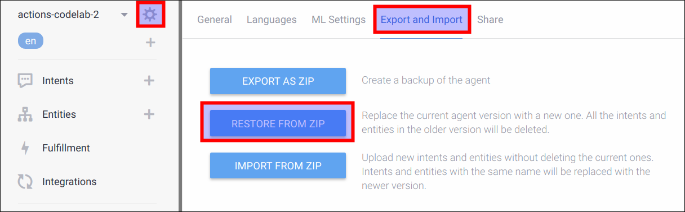
codelab-level-one.zipファイルをアップロードします。- "RESTORE" をタイプして、Restore ボタンをクリックします。
- Done をクリックします。
フルフィルメントのデプロイ
いま、あなたの Actions project および Dialogflow エージェントが準備できました。Firebase Functions CLI を使って、ローカルの index.js ファイルをデプロイするために、以下を行ってください:
- ターミナル内で、ベースファイルを clone した
/level2/functionsディレクトリに移動します。 - あなたがセットした Actions project ID を使って、以下のコマンドを実行します:
firebase use <PROJECT_ID>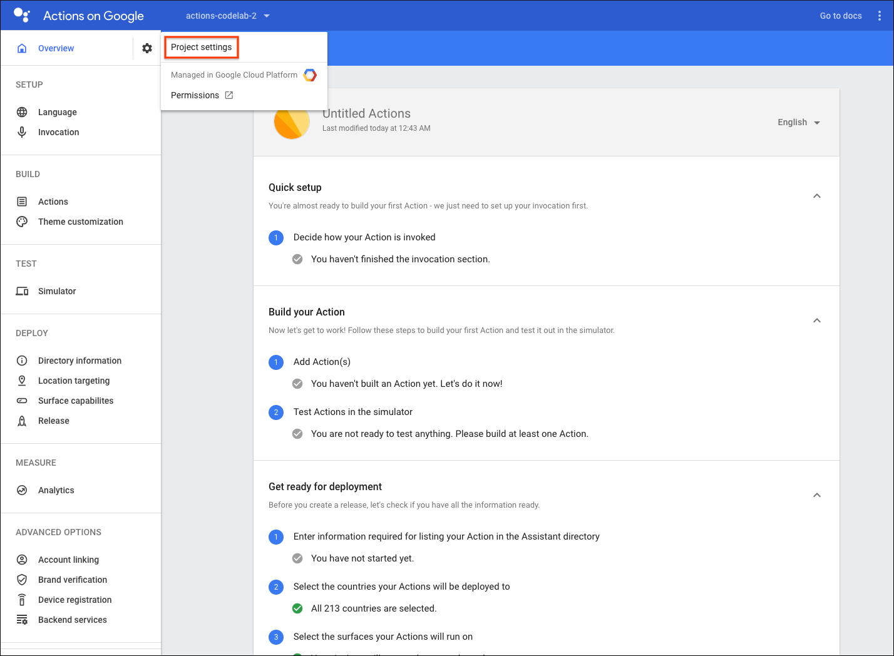
- 依存ファイルをインストールするために、ターミナル内で以下のコマンドを実行します。
npm install- Firebase にあなたの Webhook をデプロイするために、以下のコマンドをターミナル内で実行します。
firebase deploy数分後、あなたは Firebase にあなたの Webhook が正常にデプロイされたことを示す "Deploy complete!" というメッセージを見るはずです。
デプロイメントURLの入手
あなたは、Cloud Functions の URL を Dialogflow に提供する必要があります。この URL を得るために、以下の手順に従ってください:
- Firebase Console を開きます。
- オプションのリストから、あなたの Actions project を選択します。
- 左のナビゲーションメニューから、Develop > Functions に移動します。
- Dashboard タブにて、Event の下にある "dialogflowFirebaseFulfillment" のエントリに URL があるはずです。この URL をコピーします。
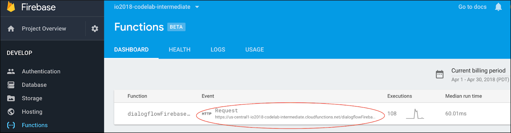
DialogflowにてURLをセットする
この時点で、あなたはフルフィルメントを使うために Dialogflow エージェントを交信する必要があります。そのためには、以下の手順に従います:
- Dialogflow Console を開きます (Firebase console は閉じてしまっても大丈夫です)。
- 左のナビゲーションから、Fulfillment に移動します。
- Webhook を有効にします。
- 既に表示されていない場合は、Firebase dashboard からコピーした URL をペースとします。
- Save をクリックします。
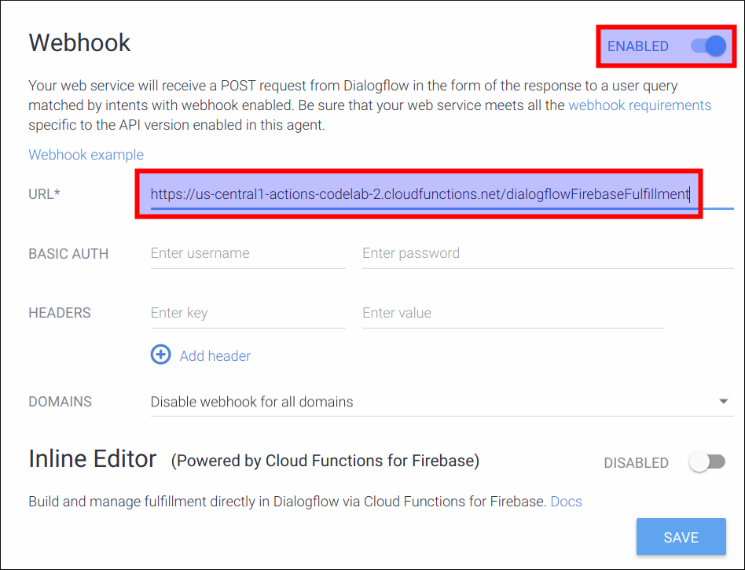
プロジェクトが正しくセットアップされたかどうかを確認する
この時点で、ユーザーは明示的にアクションを呼び出すことによって会話を開始できます。ユーザーは会話の途中で色を指定することで、"favorite color" カスタムインテントをトリガーできます。 Dialogflow は、ユーザの入力を解析して、あなたのフルフィルメントに必要な情報、つまり色を抽出し、これをあなたのフルフィルメントに送ります。あなたのフルフィルメントは、ユーザーに返信するために幸運な数字を自動生成します。
Actions console simulator であなたのアクションをテストするために以下を行ってください。
- Dialogflow Console の左のナビゲーションにて、 Integrations > Google Assistant をクリックします。
- Auto-preview changes が有効になっていることを確認して、Actions project を更新するために Test をクリックします。
- Actions Console simulator は、あなたのアクションを読み込みます。アクションをテストするために、Input フィールド内に "Talk to my test app" とタイプして、Enter キーを押します。
- "Welcome! What is your favorite color?" という返事を得るはずです。
- "Blue" とタイプします。
- "Your lucky number is 4." という返事を得るはずです。
Actions projectには常に "Google IO 18" などの呼び出し名があります。ユーザーが "Talk to Google IO 18" と言うと、これは Dialogflow のウェルカムインテントをトリガーします。すべての Dialogflow エージェントには、ユーザが会話を開始するためのエントリポイントとして機能するウェルカムインテントが1つあります。
ほとんどの場合、ユーザーは毎回会話の始めからスタートするよりも、達成したい特定のタスクにジャンプしたいと考えるでしょう。明示的なディープリンクとImplicit invocation（暗黙的な呼び出し）を対話のショートカットとして提供して、ユーザーがより効率的に作業を進めるようにすることができます。
ディープリンクとImplicit invocationをアクションに追加することは、Dialogflow Console の Googleアシスタントの統合ページを使用することで、簡単で単一ステップのプロセスです。
ディープリンクとImplicit invocationのためのインテントの追加
Actions project では、エージェントにて "favorite color" という Dialogflow カスタムインテントを定義しておく必要があります（これはレベル1のコードラボで説明されています）。エージェントは、"I love yellow" や "Purple is my favorite" などのトレーニングフレーズを解析し、各フレーズから color パラメータを抽出して、フルフィルメントで使用できるようにします。
このコードラボでは、Implicit invocation として "favorite color" インテントを追加します。つまり、ユーザーはそのインテントを呼び出すことで、ウェルカムインテントをスキップできます。これにより、ユーザーは "favorite color" インテントをディープリンクとして明示的に呼び出すこともできます（例: "Hey Google, talk to my test app about blue" など）。 "favorite color" インテントに対して定義したトレーニングフレーズとパラメータは、Dialogflowがユーザーがこのディープリンクを呼び出したときに color パラメータを抽出できるようにします。
ディープリンクとImplicit invocationのためのインテントを追加するために、以下を行ってください:
- Dialogflow Console の左のナビゲーションにて、Integrations をクリックします。
- Google Assistant カードにて、Integration Setting をクリックします。
- Discovery > Implicit Invocations にて、Add intent をクリックして、favorite color を選択します。
これで、アシスタントはユーザーから呼び出し時に色が提供されることを聞くようになり、そしてフルフィルメント向けに color パラメーターを抽出するようになります。
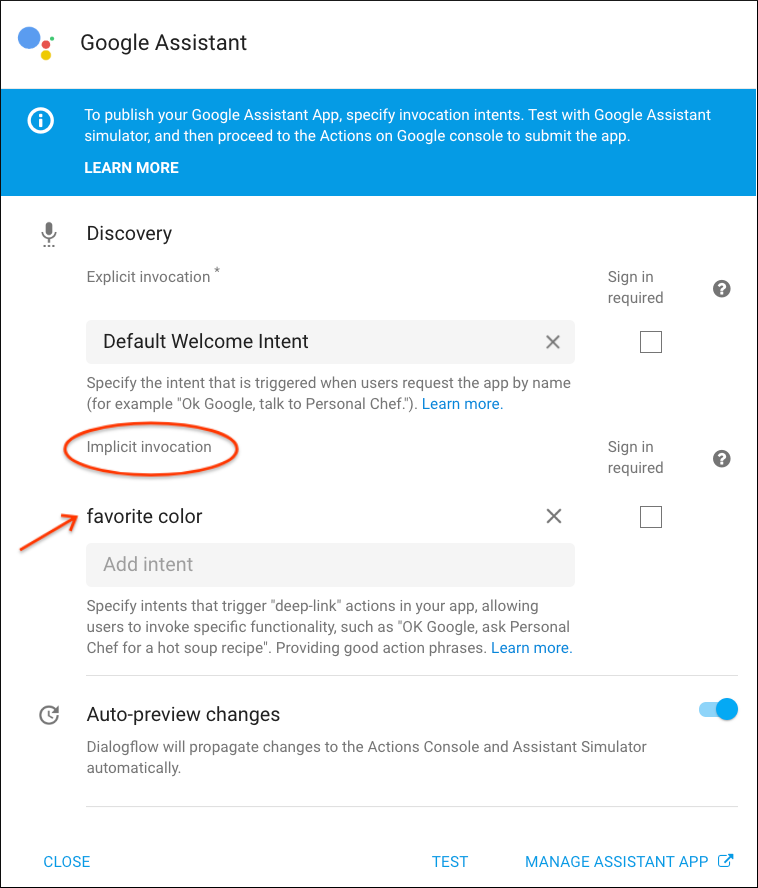
ディープリンクをテストする
Actions console simulator にてディープリンクをテストするには、以下を行います:
- Actions project をアップデートするために、Test をクリックします。
- Input フィールドに "Talk to my test app about blue" とタイプして、Enter キーを押します。
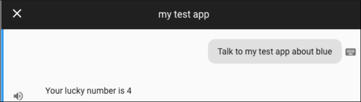
カスタムフォールバックインテントの定義
探しているパラメータを提供しない呼び出しフレーズを処理するカスタムフォールバックインテントを作成することをお勧めします。たとえば、色を言うのではなく、ユーザが "Talk to my test app about bananas" のような予期しないことを言うかもしれません。"bananas" という用語は、私たちの Dialogflow インテントには適していないので、全てを受け取るインテントを構築する必要があります。
アシスタントは "faavorite color" インテントと一致するフレーズを聞くようになったので、他のものをキャッチするためのカスタムのフォールバックインテントを提供する必要があります。
カスタムフォールバックインテントをセットアップするには、以下を行います:
- Dialogflow Console にて、左のナビゲーションで Intents をクリックし、その後 Create Intent をクリックします。
- そのインテントに "Unrecognzed Deep Link" またはそれと同等の名前を付けます。このインテント名は Webhook で参照されないので、好きなように名付けることができます。
- Contexts の下にある Add input context をクリックし、"google_assistant_welcome" と入力します。このインテントが "'google_assistant_welcome" 入力コンテキストを使用するように指定すると、会話の開始時にのみ呼び出されるようになります。入力コンテキストを登録した後、出力コンテキストとして "google_assistant_welcome" も表示されます。その出力コンテキストを削除するには、x をクリックします。
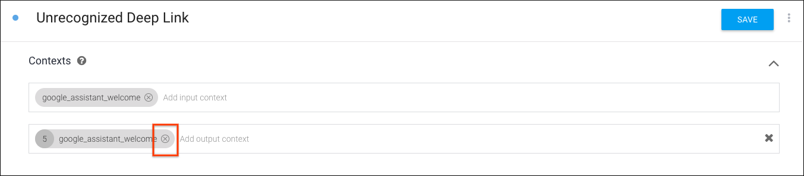
- Training phrases にて、ユーザの言うこととして "banana" (または他の名詞) を追加します。
@sys.anyエンティティを使用して、Dialogflow に式を（"banana" だけでなく）任意の文法に一般化するよう指示します。"banana" をダブルクリックしてフィルタリングするか、@sys.anyを選択してください。@sys.anyエンティティを使用しないように警告メッセージがポップアップ表示されます。今のところこれを無視しても問題ありません。OK をクリックします（通常、@sys.anyエンティティを使用することはお勧めできません。これは、他のインテントの音声バイアスを圧倒する可能性があるためです。これは、他のインテントが一致していない呼び出し時にのみ起動されることを保証する特殊なケースです。）。
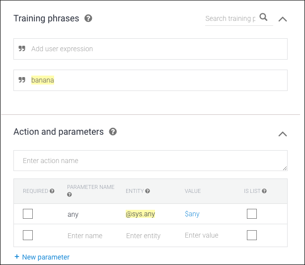
- Responses にて、Text response として "Sorry, I am not sure about $any . What's your favorite color?" を追加します。
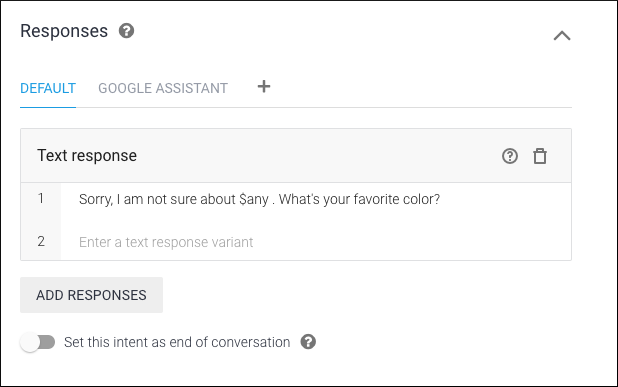
- Save をクリックします。
カスタムフォールバックインテントをテストする
Actions console simulator にてカスタムフォールバックインテントをテストするために、Input フィールドに "Talk to my test app about banana" とタイプして、Enter キーを押します。
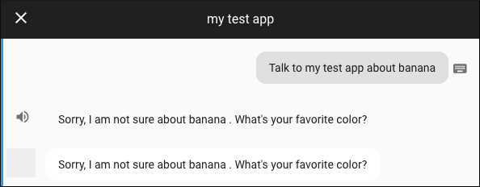
ユーザーのパーソナライズされた情報を使用することで、あなたのアクションをより魅力的でインタラクティブにすることができます。ユーザー情報へのアクセスを要求するために、Webhook はヘルパーインテントを使用して応答をパーソナライズするための値を取得することができます。
permission ヘルパーインテントを使ってユーザ情報を取得する
actions_intent_PERMISSION ヘルパーインテントを使用して、ユーザの同意によってユーザーの表示名を取得することができます。permission ヘルパーインテントを使用するには、以下を行います。
- Dialogflow Console にて、Intents に移動します。
- Default Welcome Intent を選択します。
- Fulfillment にて、Enable webhook call for this intent を有効にします。Webhook からのレスポンスは、上の Text responses にタイプした任意のレスポンスを上書きするでしょう。
- Save をクリックします。
- Intents に戻ります。
- Create Intent をクリックします。
- インテントに "actions_intent_PERMISSION" と名前を付けます。
- Events にて、Add event をクリックし、"actions_intent_PERMISSION" を入力してください。
- Fulfillment にて、Enable webhook call for this intent を有効にします。
- Save をクリックします。
- ターミナル内で、
/level2/functionsフォルダに移動し、あなたのローカルマシン内で任意のテキストエディアを使ってindex.jsファイルを開きます。 - このコードを置き換えます。
const {dialogflow} = require('actions-on-google');以下に置き換えます。
index.js
// Import the Dialogflow module from the Actions on Google client library.
const {
dialogflow,
Permission,
} = require('actions-on-google');- 以下のコードをファイルの最後に追加します。
index.js
// Handle the Dialogflow intent named 'Default Welcome Intent'.
app.intent('Default Welcome Intent', (conv) => {
conv.ask(new Permission({
context: 'Hi there, to get to know you better',
permissions: 'NAME'
}));
});- ファイルを保存します。
ユーザ情報を使ってレスポンスをカスタマイズする
Next, you'll need to update your webhook to handle the response. You'll use the user's information in your response if they granted permission and gracefully move the conversation forward regardless if permission was not granted.
次に、応答を処理するために Webhook を更新する必要があります。もしユーザが許可を与えていれば、あなたは応答の中でユーザ情報を利用することになります。そして、もし許可が与えられていなかった場合でも、適切に会話を前に進めます。
ユーザに応答するために、以下を行います:
index.jsに以下のコードを追加します。
index.js
// Handle the Dialogflow intent named 'actions_intent_PERMISSION'. If user
// agreed to PERMISSION prompt, then boolean value 'permissionGranted' is true.
app.intent('actions_intent_PERMISSION', (conv, params, permissionGranted) => {
if (!permissionGranted) {
conv.ask(`Ok, no worries. What's your favorite color?`);
} else {
conv.data.userName = conv.user.name.display;
conv.ask(`Thanks, ${conv.data.userName}. What's your favorite color?`);
}
});前に作成した actions_intent_PERMISSION インテントを処理するコールバック関数を登録します。コールバックでは、まずユーザーの表示名を知る権限を与えられているかどうかをチェックします。クライアントライブラリは、この引数を3番目のパラメータ（ここでは permissionGranted）としてコールバック関数に渡します。
conv.user.name.display 値は、HTTPリクエストボディの一部として Webhook に送信されるユーザーの表示名を表しています。ユーザーがパーミッションを与えた場合は、 conv.data オブジェクトの userName というプロパティに conv.user.name.display の値を格納します。
conv.data オブジェクトは、ダイアログ内ストレージのためにクライアントライブラリによって提供されるデータ構造です。このユーザーの会話中、このオブジェクトのプロパティを設定し操作することができます。
- 以下のコードを置き換えます。
app.intent('favorite color', (conv, {color}) => {
const luckyNumber = color.length;
conv.close('Your lucky number is ' + luckyNumber);
});以下にします。
index.js
// Handle the Dialogflow intent named 'favorite color'.
// The intent collects a parameter named 'color'
app.intent('favorite color', (conv, {color}) => {
const luckyNumber = color.length;
if (conv.data.userName) {
conv.close(`${conv.data.userName}, your lucky number is ${luckyNumber}.`);
} else {
conv.close(`Your lucky number is ${luckyNumber}.`);
}
});ここでは、userName プロパティを使用してユーザーを名前で指定するために、 "favorite color" インテントのコールバック関数を変更します。 conv.data オブジェクトに userName という名前のプロパティがない場合（つまり、ユーザが、ユーザ名を知る権限を以前に拒否したため、プロパティが設定されていない場合）、Webhook は引き続き応答しますが、ユーザの名前は使用しません。
- ファイルを保存します。
- ターミナル内で、Firebase に Webhook をデプロイするために、以下のコマンドを実行します。
firebase deployコードをテストする
Actions console simulator にてアクションをテストするために、以下を行います:
- Input フィールドにて "Talk to my test app" とタイプして、Enter キーを押します。
- "yes" とタイプします。
- "blue" とタイプします。
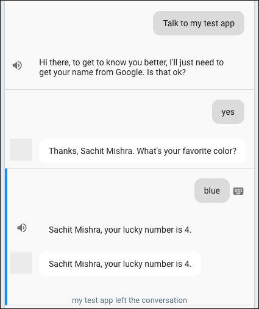
レスポンス文字列に SSML を埋め込んで、音声応答のサウンドを変更したり、サウンドエフェクトやその他のオーディオクリップを埋め込んだりすることもできます。
以下は、SSML マークアップの例を示しています。
<speak>
Mandy, your lucky number is 5.
<audio src="https://actions.google.com/sounds/v1/cartoon/clang_and_wobble.ogg"></audio>
</speak>サウンドエフェクトを追加するためにSSMLを使用する
このコードラボでは、私たちはActions on Googleのサウンドライブラリからサウンドクリップを使用します。
"favorite color" レスポンスにサウンドエフェクトを追加するには、以下を行います:
index.jsファイルをエディタで開きます。- 以下のコードを置き換えます。
app.intent('favorite color', (conv, { color }) => {
const luckyNumber = color.length;
if (conv.data.userName) {
conv.close(`${conv.data.userName}, your lucky number is ` + `${luckyNumber}.`);
} else {
conv.close(`Your lucky number is ` + `${luckyNumber}.`);
}
});以下に置き換えます。
index.js
// Handle the Dialogflow intent named 'favorite color'.
// The intent collects a parameter named 'color'
app.intent('favorite color', (conv, {color}) => {
const luckyNumber = color.length;
const audioSound = 'https://actions.google.com/sounds/v1/cartoon/clang_and_wobble.ogg';
if (conv.data.userName) {
// If we collected user name previously, address them by name and use SSML
// to embed an audio snippet in the response.
conv.close(`<speak>${conv.data.userName}, your lucky number is ` +
`${luckyNumber}<audio src="${audioSound}"></audio>.</speak>`);
} else {
conv.close(`<speak>Your lucky number is ${luckyNumber}` +
`<audio src="${audioSound}"></audio>.</speak>`);
}
});ここでは、ウェブ上の静的にホストされたオーディオファイルのURL文字列を含む audioSound 変数を宣言します。ユーザーの応答の文字列を <speak> SSMLタグを使用して囲むことで、応答がSSMLとして解析されるようにGoogle Assistantに指示します。
文字列に埋め込まれた <audio> タグは、あなたがアシスタントに応答内で何らかのオーディをを再生したいポイントを示します。そのタグの src 属性は、オーディオがどこにホストされているかを示します。
- ファイルを保存します。
- ターミナル内で、Firebase に Webhook をデプロイするために、以下のコマンドを実行します。
firebase deployコードをテストする
Actions console simulator にてアクションをテストするために、以下を行います:
- Input フィールドにて "Talk to my test app" とタイプして、Enter キーを押します。
- "yes" とタイプします。
- "blue" とタイプします。もし全てが正しく動作すれば、ユーザは応答内でサウンドエフェクトを聞くはずです。
会話を続けるために、特定のインテントの後にユーザーの応答に基づいてトリガーするフォローアップインテントを追加することができます。"favorite color" のフォローアップインテントを追加するには、次のようにします。
- Dialogflow Console の左のナビゲーションにて、Intents をクリックします。
- favorite color の上でカーソルをホバーし、その後 Add follow-up intent をクリックします。これを2回行います。一度 yes を選択して、もう一度 no を選択します。
- favorite color - no にて、以下を行います:
- Responses にて、 Text response として "Goodbye, see you next time!" を追加します。
- Set this intent as end of conversation を有効にします。
- Save をクリックします。
- favorite color - yes にて、以下を行います:
- Responses にて、 Text response として "Which color, indigo taco, pink unicorn or blue grey coffee?" を追加します。
- Save をクリックします。
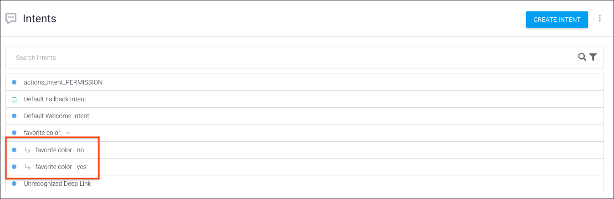
会話型アプリを拡張するとき、あなたはカスタムエンティティを使用して会話をさらに深めて、会話をパーソナライズすることができます。このセクションでは、これを行う方法について説明します。
カスタムエンティティを追加する
これまでは、組み込みのエンティティ（@sys.color、@sys.any）を使用してユーザー入力を照合してきました。 Dialogflow でカスタムエンティティ（開発者エンティティとも呼ばれる）を作成して、ユーザーがいくつかの偽の色のうちの1つを提供したときに、Webhook のカスタム応答をフォローアップすることができます。
カスタムエンティティを作成するには、以下を行います:
- Dialogflow Console の左のナビゲーションにて、 Entities をクリックします。
- Create entity をクリックして、"fakeColor" と名付けます。
- 以下のエンティティとシノニムを追加して、Save をクリックします:
- indigo taco / the first one
- pink unicorn / the second one
- blue grey coffee / the third one
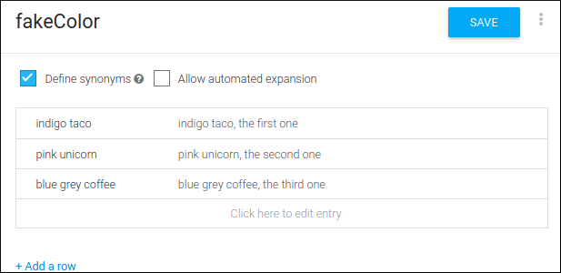
- 左のナビゲーションにて、 Intents をクリックします。
- Create intent をクリックして、"favorite fake color" と名付けます。
- Training phrases にて、以下をタイプします:
- "indigo taco",
- "tell me about pink unicorn"
- "i want to know about blue grey coffee".
Dialogflow がカスタムエンティティを認識するようになったので、Actions and parameters にて "fakeColor" パラメータが表示されるはずです。
- Fulfillment にて、 Enable webhook call for this intent を有効にします。
- Save をクリックします。
あなたが定義した偽の色の一つをユーザが選択すると、あなたの Webhook はそれぞれの色を表示する basic card を応答するでしょう。
あなたの Webhook を以下のようにして設定します:
- あなたのデバイス上で、
/level2/functionsフォルダに移動し、エディタでindex.jsを開きます。 - このコードを置き換えます。
const {
dialogflow,
Permission,
} = require('actions-on-google');これに置き換えます。
index.js
// Import the Dialogflow module and response creation dependencies
// from the Actions on Google client library.
const {
dialogflow,
BasicCard,
Permission,
} = require('actions-on-google');- このコードを置き換えます。
app.intent('favorite color', (conv, {color}) => {
const luckyNumber = color.length;
const audioSound = 'https://actions.google.com/sounds/v1/cartoon/clang_and_wobble.ogg';
if (conv.data.userName) {
// If we collected user name previously, address them by name and use SSML
// to embed an audio snippet in the response.
conv.close(`<speak>${conv.data.userName}, your lucky number is ` +
`${luckyNumber}<audio src="${audioSound}"></audio>.`);
} else {
conv.close(`<speak>Your lucky number is ${luckyNumber}` +
`<audio src="${audioSound}"></audio>.`);
}
});これに置き換えます。
index.js
// Handle the Dialogflow intent named 'favorite color'.
// The intent collects a parameter named 'color'.
app.intent('favorite color', (conv, {color}) => {
const luckyNumber = color.length;
const audioSound = 'https://actions.google.com/sounds/v1/cartoon/clang_and_wobble.ogg';
if (conv.data.userName) {
// If we collected user name previously, address them by name and use SSML
// to embed an audio snippet in the response.
conv.ask(`<speak>${conv.data.userName}, your lucky number is ` +
`${luckyNumber}.<audio src="${audioSound}"></audio>` +
`Would you like to hear some fake colors?</speak>`);
} else {
conv.ask(`<speak>Your lucky number is ${luckyNumber}.` +
`<audio src="${audioSound}"></audio>` +
`Would you like to hear some fake colors?</speak>`);
}
});- 以下のコードを、ファイルの末尾に追加します。
index.js
// Define a mapping of fake color strings to basic card objects.
const colorMap = {
'indigo taco': new BasicCard({
title: 'Indigo Taco',
image: {
url: 'https://storage.googleapis.com/material-design/publish/material_v_12/assets/0BxFyKV4eeNjDN1JRbF9ZMHZsa1k/style-color-uiapplication-palette1.png',
accessibilityText: 'Indigo Taco Color',
},
display: 'WHITE',
}),
'pink unicorn': new BasicCard({
title: 'Pink Unicorn',
image: {
url: 'https://storage.googleapis.com/material-design/publish/material_v_12/assets/0BxFyKV4eeNjDbFVfTXpoaEE5Vzg/style-color-uiapplication-palette2.png',
accessibilityText: 'Pink Unicorn Color',
},
display: 'WHITE',
}),
'blue grey coffee': new BasicCard({
title: 'Blue Grey Coffee',
image: {
url: 'https://storage.googleapis.com/material-design/publish/material_v_12/assets/0BxFyKV4eeNjDZUdpeURtaTUwLUk/style-color-colorsystem-gray-secondary-161116.png',
accessibilityText: 'Blue Grey Coffee Color',
},
display: 'WHITE',
}),
};
app.intent('favorite fake color', (conv, {fakeColor}) => {
conv.close(`Here's the color`, colorMap[fakeColor]);
});この新しいコードは、主に2つのタスクを実行します:
まず、カラー文字列（例えば、"indigo taco"、"pink unicorn"、"blue grey coffee"）のマッピング（colorMap）を BasicCard オブジェクトに設定します。 BasicCard は、 basic card タイプに対応する視覚的応答を構築するためのクライアントライブラリクラスです。
コンストラクタ呼び出しでは、次のようなそれぞれの特定の色に関連する構成オプションを渡します:
- 色の名前を持つタイトル。
- 色を表現する画像のURLと、その代替テキスト。
- 背景色を決定する "display" 設定（この場合、無地の白）。
最後に、ユーザーが選択した fakeColor オプションを使用して、その偽の色に対応するカードを作成してユーザーに提示する "favorite fake color" インテントのコールバック関数を設定します。
- ターミナル内で、Firebase に Webhook をデプロイするために、以下のコマンドを実行します。
firebase deployコードをテストする
Actions console simulator にてアクションをテストするために、以下を行います:
- Input フィールドにて "Talk to my test app" とタイプして、Enter キーを押します。
- "yes" とタイプします。
- "blue" とタイプします。
- "sure" とタイプします。
- "Tell me about the first one" とタイプします。
偽の色を選択すると、図2のような basic card を含む応答を受け取るはずです。

おめでとうございます！
あなたは、Actions on Google を使って、会話型ユーザインターフェースを構築するために必要な中級レベルのスキルを身につけました。
What we've covered
- Node.js クライアントライブラリを使ったローカルでのフルフィルメント開発のセットアップ方法、および Firebase コマンドラインでのデプロイ方法。
- Dialogflow における Google Assistant integration を使ったアクションへのディープリンクの作成方法。
- 応答をパーソナライズするための Actions on Google ヘルパーインテントの使用方法。
- Dialogflow カスタムエンティティ、SSML ベースのオーディオエフェクト、そしてフォローアップインテントの追加方法。
次は何ですか？
Actions on Googleについて学ぶために、以下のリソースについても参考にすることができます:
- actions.google.com: Actions on Googleの公式ドキュメントサイトです。
- Actions on Google GitHub repo: サンプルコードとライブラリがあります。
- Dialogflow.com: Dialogflowの公式ドキュメントサイトです。
- Actions on Google Developers: Actions on Google を使っている開発者向けの公式な Google+ コミュニティです。
Twitter @ActionsOnGoogle で最新のアナウンスに耳を傾け、 #AoGDevs にツイートしてあなたが作ったものを共有しましょう！
Feedback survey
次に進む前に、私たちにこのフォームからフィードバックをいただければと思います。